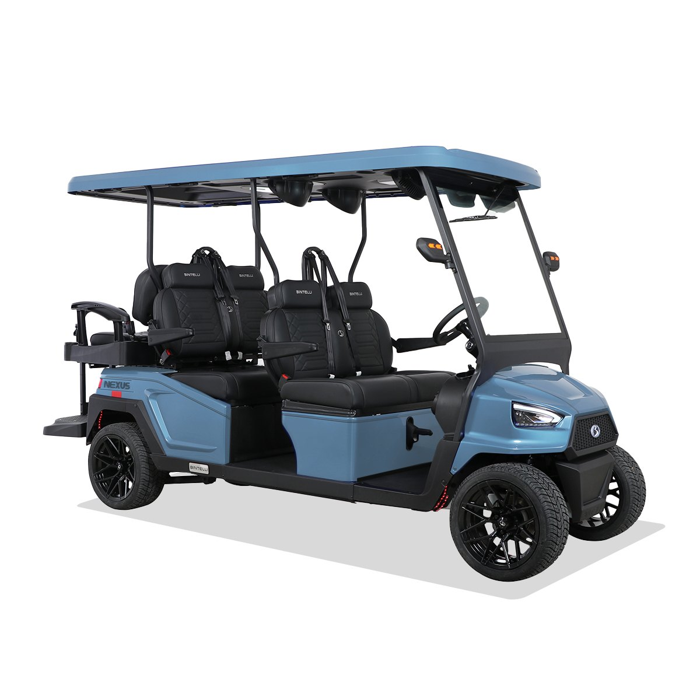

New Golf Carts / Bintelli / Nexus 6 Seater
Color: Anvil

Bintelli
Nexus 6 Seater
- 6 passengers
- Up to 30–40 miles
- Up to 25 mph
The Bintelli Nexus 6 Seater is a street-legal golf cart. Specifications below are from the manufacturer’s official model page.
Golf Carts of Texas also installs custom accessories — lift kits, wheels, seats, lighting, sound and more. Browse our Accessories pages to see what we can add.
Specifications
| Seating | 6 |
|---|---|
| Motor | 5kW (6.7 HP) |
| Running distance | Up to 30–40 miles |
| Max forward speed | Up to 25 mph |
| Max grade | Up to 25% |
| Max load capacity | 1,200 lbs |
| Dimensions | 12.2 ft L × 3.7 ft W × 6.6 ft H |
| Ground clearance | 4.5" |
| Tires | 14" |
| Wheels | 14" |
| Frame & chassis | Aluminum |
| Roof support | Aluminum |
| Suspension | Front – independent, rear – coil spring hydraulic shock |
| Wheelbase | 65" |
| Turning radius | 15' 4" |
| Street-legal / LSV | Classified as a low-speed vehicle or neighborhood electric vehicle; certified for use in most states on roads with a posted speed limit of 35 mph or less. |
Specs per manufacturer.
Standard features
- Side mirrors with LED turn signals
- DOT windshield with wiper
- DOT three-point seat belts
- Reverse camera
- Hydraulic disc brakes
- Headlights, taillights, and turn signals
- 13" high-resolution infotainment center
- HD optimized sound system
- Comfort-focused seating
- Integrated roof and dashboard illumination
- LED lighting
- Integrated roof-mounted cooling fans
- Ergonomic driver positioning
- Sport steering wheel
- Onboard smart charger with Bluetooth
- Dual USB charging ports
- Dual locking storage compartments
- Beach chair holder
- Dome lighting
Available options & accessories
- Longer-range battery upgrade (published as an available upgrade; no price listed)